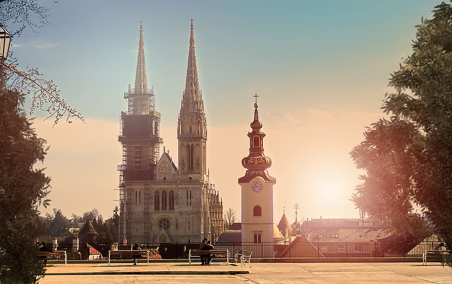
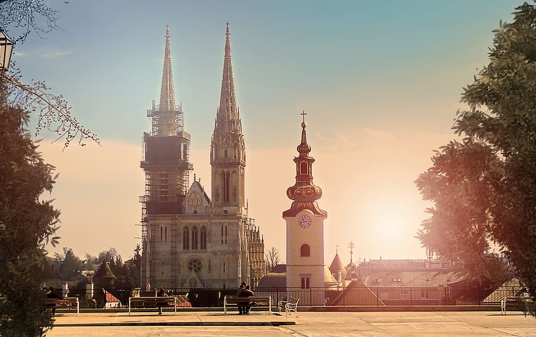

Information
Welcome to Zagreb, the vibrant capital of Croatia. Nestled between the slopes of Medvednica Mountain and the banks of the Sava River, Zagreb offers a delightful mix of history, culture, and natural beauty. As you explore the city, you'll be captivated by its charming blend of medieval architecture, green parks, and bustling streets. Begin your journey in the Upper Town (Gornji Grad), where the iconic St. Mark's Church and the medieval Stone Gate await. Wander through the narrow cobblestone streets, visit the Lotrščak Tower for panoramic views, and immerse yourself in the rich history of the city. Zagreb is known for its cultural scene, with numerous museums, galleries, and theaters to explore. Discover the impressive collections at the Croatian Museum of Naïve Art, the Museum of Broken Relationships, and the Museum of Contemporary Art. Don't miss the Zagreb Cathedral, a stunning Gothic masterpiece, and the lively Dolac Market, where you can experience the vibrant local culture and sample fresh produce. Take a stroll through the lush parks and gardens that dot the city, such as the beautiful Zrinjevac Park and the enchanting Botanical Gardens. For a panoramic view of Zagreb, head to the Zagreb 360° Observation Deck, located in the heart of the city. Indulge in traditional Croatian cuisine and taste the local specialties. Treat yourself to hearty dishes like štrukli (cheese-filled pastry), kulen (spicy sausage), and fresh seafood from the Adriatic coast. Sip on a cup of kava (coffee) at one of the cozy cafés and enjoy the relaxed atmosphere. Zagreb is a city of festivals and events, offering a vibrant cultural calendar throughout the year. From the Zagreb Advent, a magical winter festival, to the INmusic Festival, featuring international music acts, there's always something happening in the city to entertain and delight. Escape to the nearby nature and enjoy the beautiful surroundings of Zagreb. Take a day trip to Medvednica Mountain, where you can hike through pristine forests, visit medieval fortresses, and enjoy breathtaking views of the city below. Experience the warmth and hospitality of the locals as you explore the lively streets, charming squares, and hidden gems of Zagreb. Whether you're enchanted by its historical landmarks, inspired by its cultural offerings, or simply immersed in its vibrant atmosphere, Zagreb promises an unforgettable journey. Welcome to Zagreb, a city that effortlessly combines tradition with modernity, inviting you to discover its rich heritage and create lasting memories.
Comments